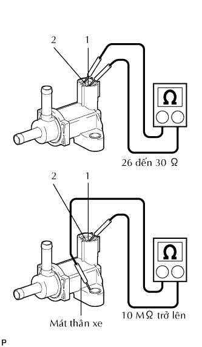
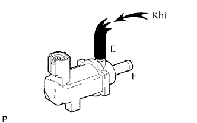
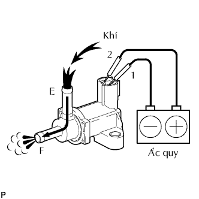

VAN CHUYỂN CHÂN KHÔNG > KIỂM TRA |
| 1. KIỂM TRA VSV LỌC |
|  |
Đo điện trở của VSV lọc.
| Nối dụng cụ đo | Điều kiện tiêu chuẩn |
| 1 - 2 | 26 đến 30 Ω ở 20°C (68°F) |
| 1 - Mát thân xe 2 - Mát thân xe | 10 MΩ trở lên |
|  |
Kiểm tra sự hoạt động của van VSV lọc.
Kiểm tra rằng khí không đi được từ cổng E đến cổng F.
|  |
Cấp điện áp ắc quy vào các cực 1 và 2.
Kiểm tra rằng khí chạy từ cổng E đến cổng F.
Nếu kết quả không như tiêu chuẩn, hãy thay thế VSV lọc.